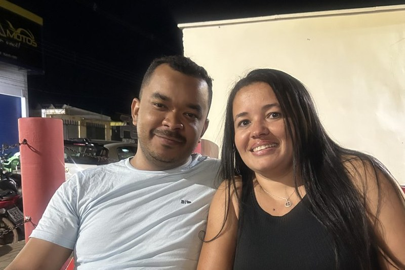

EPISÓDIO 01
Quando tudo começou
Princesa, talvez você nem imagine o quanto aquelas primeiras conversas começaram a mudar meus dias.
Tudo começou de um jeito simples, entre mensagens e ligações. Mas, aos poucos, conversar com você deixou de ser apenas parte do dia e passou a ser uma das partes que eu mais esperava.
Fui conhecendo seu jeito, me aproximando de você e, quando percebi, já tinha criado por nós um sentimento que não queria mais deixar para trás.
Uma conversa virou carinho.
O carinho virou sentimento.
E o sentimento virou nós. ❤️